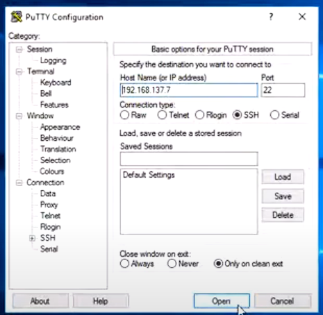
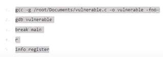
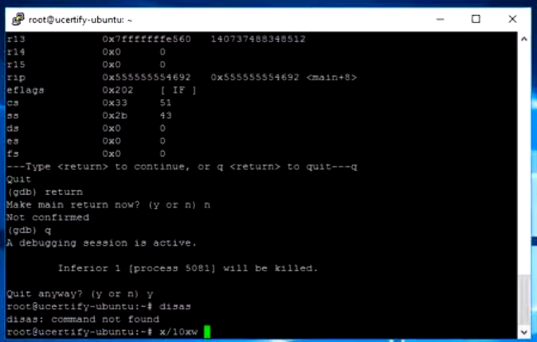
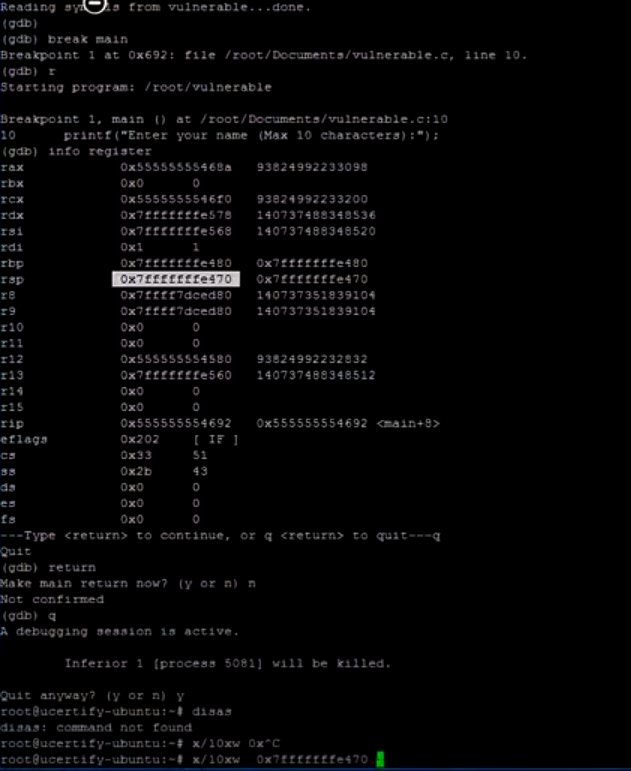

Buffer Overflow
We can defend against a buffer overflow attack using PuTTY, a free and open-source terminal emulator.
PuTTY can establish an SSH connection to a remote computer. A secure connection can be established
using the SSH (Secure Shell) protocol. A PC can safely send and receive data from a remote server in
this manner.
First we configure PuTTY:

Then we type this commands once at a time and observe the stack:


Execute the command: x10xw \\rsp value// to find the memory address:
